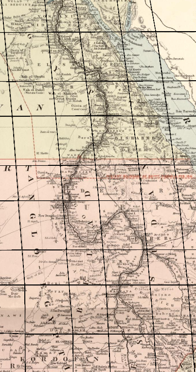

The Necronomicon.net
To see that you are a true disciple of our ways, this book alone holds the secret combination of runes needed to enter the House of the Dead. The correct combination of runes is:
Preface
If you're reading this book, that means you have just finished disposing of the body of the great necromancer that came before you, and after consuming their shortest fingernail, have claimed your place as the successor of our great tradition! Or maybe you are reading the online version, courtesy of the Necromantic Preservation Cause.
No matter your reading situation, this book holds all the information necessary in your visit to the house of the dead. Many aspiring souls begin their deathly careers here, but be wary, as not all of them make it out. Not alive, anyway.
The Ancient Lamp
It is said that whoever lights this lamp can speak one name to it, and that name would be pulled from Sheol and back to the earth. The lamp was shattered many years ago by a righteous king, who deemed its power to be evil. Now the pieces of this artifact remain spread across the House of the Dead, awaiting their reconstruction.
When all three parts of the lamp are assembled oil will fill the lamp, and all that would be left to do is set it alight, and speak a name. (Be careful to not speak the name of a living person. Research has shown this could lead to disastrous results.)
Here is an excerpt from a British map depicting the Nile Valley, where the Lamp was originally found. There is an old saying about the Nile and the Lamp: "Those who wish to complete the Lamp's trial, must first follow in the steps of the Nile".
The Old Dance
It is a necromantic tradition, that whenever entering an empty room, one must perform a ritualistic dance. The instructions to the dance are laid out in the following poem:
"You take a step to the right,
a step to the left,
up and down you go,
if you aren't deaf.
One more trip up,
and to the right, you see,
that's how you do the dance of necromancy!"
The Fellow Houses
The House of the Dead does not stand alone as a singular home for necromantic knowledge. While the House of the Dead resides in the East, the House of the Owl resides in the West, the House of the Fox resides in the North, and the House of the Snake resides in the South.